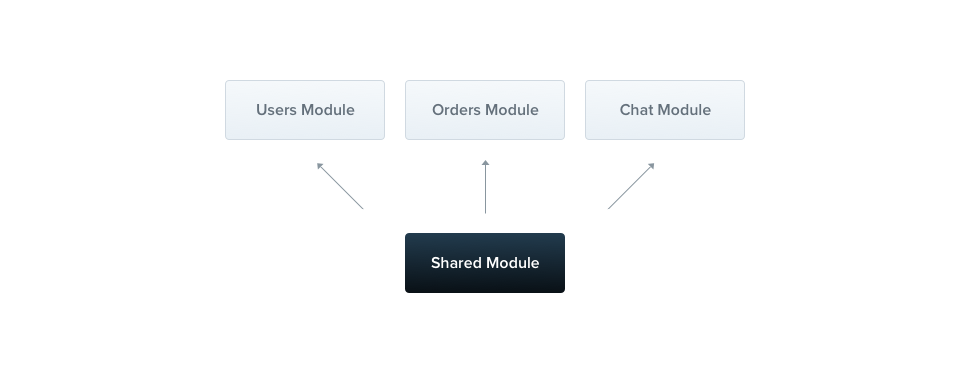

NestJS 공식문서 번역 겸 공부하는 글 입니다.
의역 및 오역이 있을 수 있습니다.
https://docs.nestjs.com/providers
Modules
Modules
module class는 @Module 데코레이터로 선언된다. @Module 데코레이터는 Nest가 애플리케이션 구조를 조직하기 위해 사용하는 메타데이터를 붙여준다.

각각의 애플리케이션은 적어도 root module이라고 불리는 하나의 module을 갖는다. root module은 Nest가 애플리케이션그래프(Nest가 module과 provider의 관계들과 의존성을 결정하는데 사용하는 내부 데이터 구조)를 빌드하기 위해 사용하는 시작점이다. 보통 매우 작은 규모의 애플리케이션은 root module 단 하나만 갖는 경우도 있지만, 이러한 경우는 일반적이지는 않다. Nest에서는 component를 구성하는데 module을 사용할 것을 강력하게 권장한다. 따라서, 대부분의 애플리케이션은 여러개의 module을 갖는 구조이다.
@Module() 데코레이터는 아래의 property들을 갖는 하나의 오브젝트를 인자로 받는다.
| providers | provider는 Nest injector에 의해 인스턴스화 되고, 최소한 이 module안에서 공유된다. |
| controllers | 이 module에서 인스턴스화 될 controller의 set |
| imports | 이 module에 필요한 provider들을 export하는 module의 리스트 |
| exports | 다른 module에서 사용할 수 있도록 이 module에서 제공하는 provider의 subset |
module은 provider를 캡슐화한다. 이것은 현재 module의 part가 아니거나, import된 module에서 export되자 않은 provider는 injection 할 수 없다는 의미이다. 따라서 module에서 제공하는 public interface(또는 API)를 고려해야 한다.
Feature modules
CatsService와 CatsController는 같은 도메인에 속해있다. 이 둘은 크게 관련되어 있고 따라서 feature module로 옮기는 것이 타당하다. feature module은 특정한 특성을 가진 코드를 관련성에 의해 조직하고, 명확한 경계를 구축한다. 이는 우리가 SOLID 원칙에 따라 개발을 할 수 있게 도와준다.
아래처럼 CatsModule을 만들었다.
// cats/cats.module.ts
import { Module } from '@nestjs/common';
import { CatsController } from './cats.controller';
import { CatsService } from './cats.service';
@Module({
controllers: [CatsController],
providers: [CatsService],
})
export class CatsModule {}
위처럼 cats.module.ts 파일에 CatsModule을 정의하고 관련된 파일들을 cats 디렉토리로 이동시켰다. 추가로 CatsModule을 root module에 등록한다.
// app.module.ts
import { Module } from '@nestjs/common';
import { CatsModule } from './cats/cats.module';
@Module({
imports: [CatsModule],
})
export class AppModule {}
따라서 디렉토리 구조가 아래처럼 변경되었다.
src
|
+-- cats
| |
| +-- dto
| | |
| | +-- create-cat.dto.ts
| |
| +-- interfaces
| | |
| | +-- cat.interface.ts
| |
| +-- cats.controller.ts
| |
| +-- cats.module.ts
| |
| +-- cats.service.ts
|
+-- app.module.ts
|
+-- main.ts
Shared modules
Nest에서 module은 기본적으로 singleton이다. 따라서 여러 module간 같은 provider 인스턴스를 공유하여 사용할 수 있다.

모든 module은 자동으로 shared module이 된다. 한번 생성되면 다른 module들에 의해 재사용 된다. CatsService 인스턴스를 다른 여러개의 module간에 공유하고싶다고 해보자. 이것을 위해 먼저 module의 export 배열에 CatsService를 추가하여 export 해주어야 한다.
// cats.module.ts
import { Module } from '@nestjs/common';
import { CatsController } from './cats.controller';
import { CatsService } from './cats.service';
@Module({
controllers: [CatsController],
providers: [CatsService],
exports: [CatsService]
})
export class CatsModule {}
이제 CatModule을 import하는 module에서는 CatsService에 접근하고 다른 module과 CatService 인스턴스를 공유하게 되었다.
Module re-exporting
위에서 보았듯, module은 내부의 provider를 export 할 수 있다. 또한 외부에서 import한 module을 re-export 할 수 있다. 아래 예제처럼, CatsModule은 import 되고 export 되어 CoreModule을 import 하는 다른 module에서 사용할 수 있게 되었다.
@Module({
imports: [CommonModule],
exports: [CommonModule],
})
export class CoreModule {}
Dependency injection
module class 역시 provider를 injection 받을 수 있다.
import { Module } from '@nestjs/common';
import { CatsController } from './cats.controller';
import { CatsService } from './cats.service';
@Module({
controllers: [CatsController],
providers: [CatsService],
})
export class CatsModule {
constructor(private catsService: CatsService) {}
}
그러나, module 클래스끼리 서로 provider로써 injection 될 수 없다. 이것은 circular dependency 때문이다.
Global modules
같은 module set를 모든곳에 import 할 수 있지만, 이것은 좋은 방법은 아니다. Angular 에서는 provider는 전역으로 등록된다. Nest에서는 provider는 module scope로 캡슐화 된다. 따라서 module을 import 하지 않으면 module의 provider를 사용할 수 없다.
모든곳에서 전역으로 module을 사용하고 싶으면 @Global() 데코레이터를 사용할 수 있다.
import { Module, Global } from '@nestjs/common';
import { CatsController } from './cats.controller';
import { CatsService } from './cats.service';
@Global()
@Module({
controllers: [CatsController],
providers: [CatsService],
exports: [CatsService],
})
export class CatsModule {}
@Global() 데코레이터는 module을 global-scope로 만들어준다. global module은 root module 또는 core module에 의해 단 한번만 등록되어야 한다. 위 예제의 CatsModule은 import하지 않고 어디에서나 injection 될 수 있다.
모든 module을 global로 만드는 것은 좋은 디자인이 아니다. global module은 반복되는 코드를 줄이기 위해 사용된다. 그러나 imports 배열을 만들어 API를 사용가능하게 만드는 것이 일반적이다.
Dynamic modules
Nest module system은 dynamic modules라는 강력한 특성을 갖고 있다. 이 특성은 provider를 동적으로 등록하고 설정할 수 있는 커스터마이징 가능한 module을 쉽게 만들 수 있게 해준다. dynamic modules에 관한 상세한 설명은 여기에서 볼 수 있다.
아래는 dynamic module를 정의하는 예제이다.
import { Module, DynamicModule } from '@nestjs/common';
import { createDatabaseProviders } from './database.providers';
import { Connection } from './connection.provider';
@Module({
providers: [Connection],
})
export class DatabaseModule {
static forRoot(entities = [], options?): DynamicModule {
const providers = createDatabaseProviders(options, entities);
return {
module: DatabaseModule,
providers: providers,
exports: providers,
};
}
}
forRoot() method는 dynamic module을 동기 혹은 비동기로 반환한다.
이 module은 Connection provider를 정의하고 있다. 그러나 추가로, forRoot() method를 통해 provider 콜렉션을 노출하고 있다(예를 들어 repository). dynamic module은 @Module() 데코레이터에 정의된 기본 module의 메타데이터를 확장하여 리턴된다.
만약 dynamic module을 전역으로 사용하고 싶으면 global 프로퍼티를 true로 설정한다.
{
global: true,
module: DatabaseModule,
providers: providers,
exports: providers,
}
DatabaseModule은 아래와 같은 방법으로 설정하고 import 할 수 있다.
import { Module } from '@nestjs/common';
import { DatabaseModule } from './database/database.module';
import { User } from './users/entities/user.entity';
@Module({
imports: [DatabaseModule.forRoot([User])],
})
export class AppModule {}
dynamic module을 re-export 할 때에는 forRoot() method는 생략한다.
import { Module } from '@nestjs/common';
import { DatabaseModule } from './database/database.module';
import { User } from './users/entities/user.entity';
@Module({
imports: [DatabaseModule.forRoot([User])],
exports: [DatabaseModule],
})
export class AppModule {}